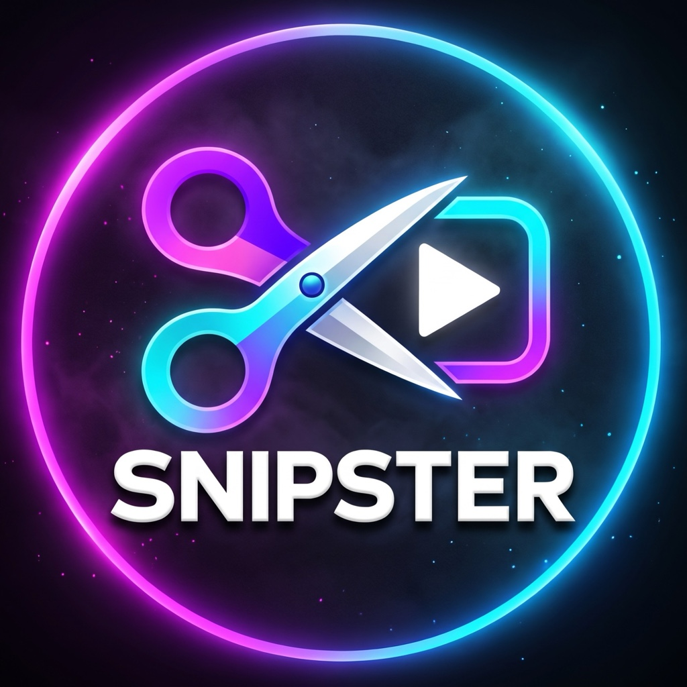

SnipsterSnipster is a desktop application that turns long videos into short vertical clips with captions and lets you upload those clips to your own TikTok account. By using Snipster you agree to these terms.
You keep all rights to the videos you process with Snipster. You are responsible for making sure you have the right to use, edit and publish every video you process or upload, including music, footage and people shown in it.
When you connect your TikTok account, Snipster uses TikTok's official Login Kit and Content Posting API. Uploads only happen when you start them yourself for a specific clip. You must follow TikTok's Terms of Service and Community Guidelines. You can disconnect your account at any time in Snipster.
Do not use Snipster to create or publish content that is illegal, infringes the rights of others, is spam, or violates the rules of any platform you post to.
Some features use third-party AI services with API keys you provide yourself. Your use of those services is subject to their own terms.
Snipster is provided "as is", without warranties of any kind. We are not liable for lost data, failed uploads, or any indirect or consequential damages, to the extent permitted by law.
We may update these terms. The current version is always available on this page.
Questions? Write to CONTACT_EMAIL.